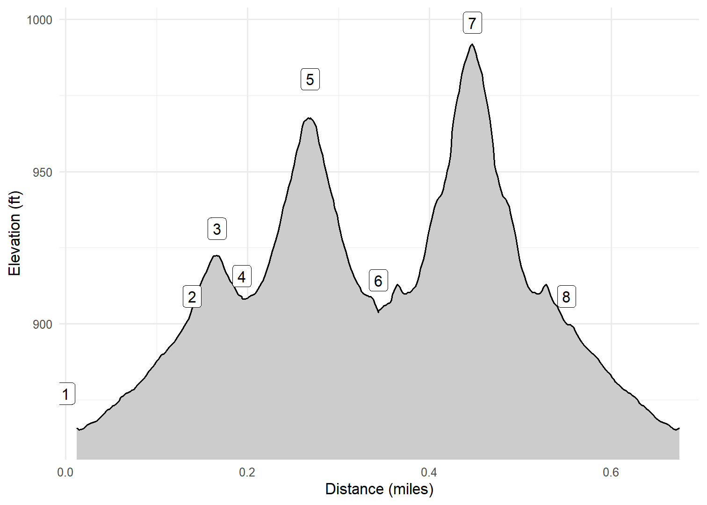

Dunning Springs Trail & Connector
Cash and I explored Dunning Springs Park in Decorah on 27-Jan-23. The trail to the springs is easy (and paved). The springs emanate from a limestone bluff and immediately cascade over a beautiful falls. You can walk right up to the falls or see them from above, along with the opening in the bluff, via wooded steps and an observation platform. There is also a steeply-ascending trail, the Dunning Springs Connector, that connects this area to the broader set of trails behind the Decorah Ice Cave.
Walk-Specific Map
Take Note
- Click on a segment to get specific information.
- Numeric labels correspond to the same labels in the elevation profile and summary information below.
Elevation Profile

Images

DNGSP01: Sign at Ice Cave Rd

DNGSP01: Typical scenery in Winter 2023

DNGSP02: Looking up at falls below the springs

DNGSP02: Typical scenery in Winter 2023

DNGSP03: Looking down from platform above springs

DNGSP02: Bridge near Spring

DNGSP02: Typical scenery Spring 2024

DNGSP02: Typical scenery Spring 2024

DNGSP02: Typical scenery Spring 2024
GPX Download
A sanitized GPX file of our hike is here.
Summary Information
| NUM | trackID | Primary | Description | Type | Owner | Distance | CumDist | DeltaElev |
|---|---|---|---|---|---|---|---|---|
| 1 | DNGSP01 | Dunning Springs Tr | Ice Cave Rd to Dunning Springs Connector | Paved | Public | 0.14 | 0.14 | 32 |
| 2 | DNGSP02 | Dunning Springs Tr | Dunning Springs Connector to Dunning Springs | Trail | Public | 0.03 | 0.17 | 22 |
| 3 | DNGSP02 | Dunning Springs Tr | Dunning Springs to Dunning Springs Connector | Trail | Public | 0.03 | 0.19 | -22 |
| 4 | DNGSP03 | Dunning Springs Tr | Dunning Springs Connector to Dunning Springs Overlook | Trail | Public | 0.08 | 0.27 | 65 |
| 5 | DNGSP03 | Dunning Springs Tr | Dunning Springs Overlook to Dunning Springs Connector | Trail | Public | 0.08 | 0.34 | -65 |
| 6 | DNGSC01 | Dunning Springs Connector | Dunning Springs Tr to Wold's Peak Tr | Trail | Public | 0.10 | 0.45 | 85 |
| 7 | DNGSC01 | Dunning Springs Connector | Wold's Peak Tr to Dunning Springs Tr | Trail | Public | 0.10 | 0.55 | -85 |
| 8 | DNGSP01 | Dunning Springs Tr | Dunning Springs Connector to Ice Cave Rd | Paved | Public | 0.14 | 0.69 | -32 |